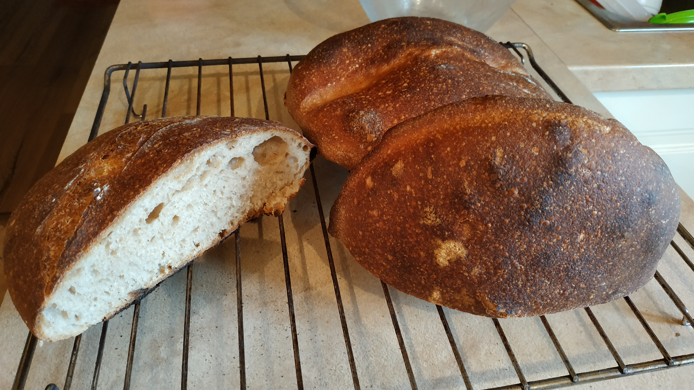
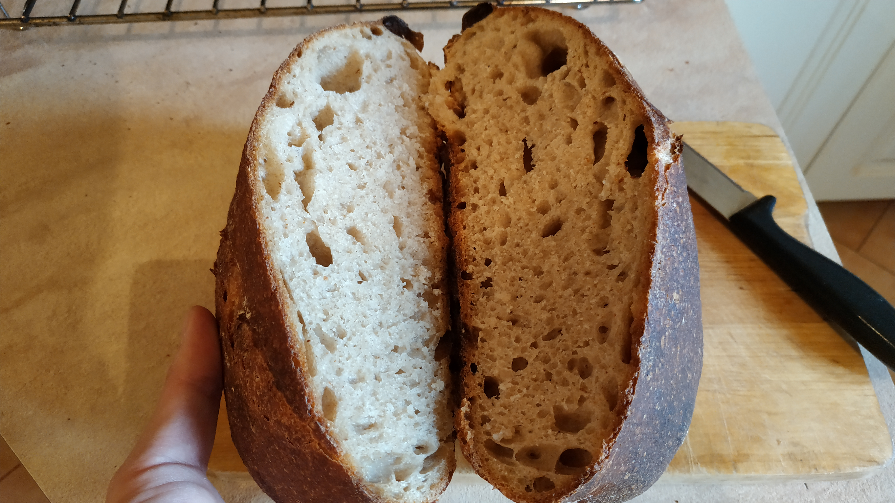
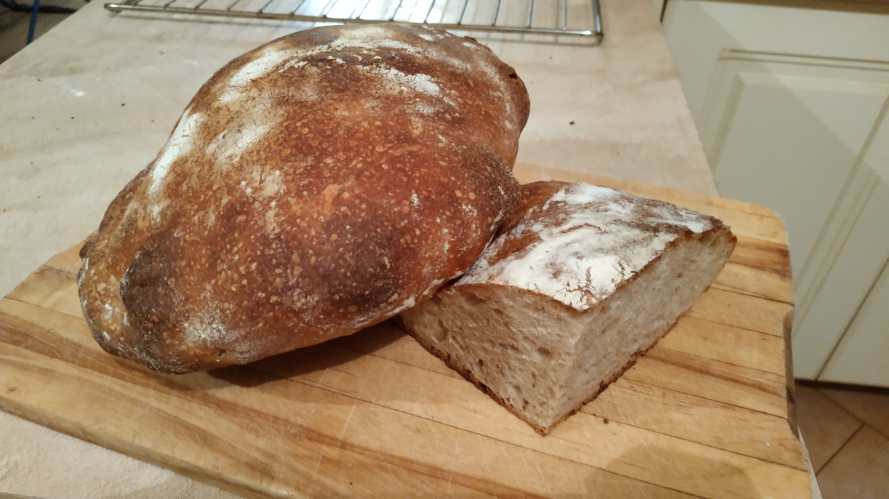
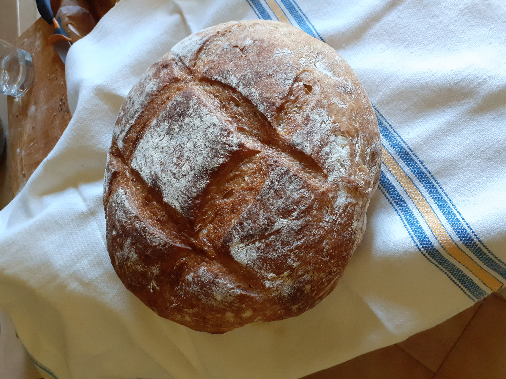

A kovászos kenyérsütés otthoni körülmények között először ijesztőnek tűnt. A folyamat valóban időigényes, a kovászt egy hétig "etetni kell", a kenyér elkészítése pedig egy egész napot igénybe vesz. Mégis megéri megtanulni, hiszen nincs ahhoz fogható, ha az ember a saját kenyerét eheti vacsorára.
Az első próbálkozásom...
  Egy kis gyakorlás után...
